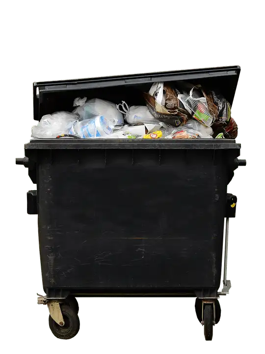

One bright, January day, not long ago, a young mother in Hobbs, N.M., drove to a quiet spot behind a business and threw an object, wrapped in a black towel inside a trash bag, closed with a hair tie, into a large dumpster.

The object was her newborn child, his umbilical cord still attached.
A fellow sidewalk advocate alerted me of the news, and though it’s not a North Dakota story, I felt it worthy of sharing. It’s one that should cause all our hearts to break and stir.
I ended up finding more details online, along with a video showing the 18-year-old mother tossing the bagged baby into the furthest recesses of the receptacle, then leaving the scene. Many, in comments underneath, called for the stiffest penalty for her.
I assume that behind the mother’s shocking behavior, we will discover a complex story. I’m not reporting on this incident to raise more ire toward her, but to highlight some points my sidewalk-advocate friend wanted to share.
First, he wondered if the people upset with the mother know that, in their state, abortions are allowed up to birth.
He also mentioned that, just a day before this tragic action, the mother could have had her child killed, legally, by abortion. Yet, by choosing this way to eliminate her baby, she faces charges of attempted homicide.
Indeed, whenever we peer into the issue of abortion, it is much darker than we can imagine, so we seek light to help us find our way.
In Evangelium Vitae, Pope John Paul II wrote of the “enormous and dramatic clash between good and evil…the ‘culture of death’ and the ‘culture of life,’” noting that we all find ourselves involved in this conflict, “with the inescapable responsibility of choosing to be unconditionally pro-life” (EV 28).
Later, in Evangelii Gaudium, Pope Francis spoke of human beings being considered consumer goods to be used and discarded. “We have created a ‘throw away’ culture which is now spreading,” he said, adding that the excluded are no longer society’s “underside or its fringes or its disenfranchised,” but are “the outcast, the ‘leftovers’” (EG 53).
“Leftovers” are things generally tossed into the trash. And it’s chilling to consider not just that a young mother felt so disconnected from her child that she would bring it to a trash receptacle, but that she would swiftly toss this precious life into the bin, surrounded by yesterday’s garbage.
As two popes have indicated, as much as we would like to wash our hands of this garish act, we are not so far from it. Though we look upon it from afar, on some level, it is right here, close to our hearts.
It is certainly close to those of us who pray every Wednesday in Fargo at our state’s only abortion facility. We see the large trash bins behind the building, and we know of the refuse placed in them on a weekly basis, too. Whether the children who die there are disposed of in those containers or elsewhere, the bins are a symbol that a careless discarding takes place there every week. And it’s not just newspapers or plastic bottles that need recycling, but pieces of what was, just hours earlier, a living human being.
Thankfully, the baby was found and revived. Now named “Saul,” he has been given a chance at life. There is much cause here for rejoicing! He has people who love him and have circled in to be his support. Thanks be to God!
Someday, however, he’ll likely learn of his mother’s dire decision, made in a moment of duress. Hopefully, as he ponders that frightful moment, he might also discover a loving God who held him there in the dark, in 30-degree weather, until his human rescuers arrived.
“If you end up writing about this,” my friend said, “could you please put a plug in for Safe Haven Laws? That a mother can surrender her baby to a hospital or first responder station without repercussions? Many places even have baby boxes, like at fire stations, where the baby can be dropped off anonymously, and kept safe until he or she is rescued.”
We do need to get this message out. Whether by abortion or being throw into the trash, no child should have to endure such horrifying circumstances.
May the God who gives life, and gave baby Saul to our world as a gift, enlighten our hearts to know how to respond, always relying on his love as a measure.
[Note: I write about my experiences on the sidewalk Downtown Fargo on Wednesday, the day abortions happen at our state’s only abortion facility, for New Earth magazine — the official news publication of the Fargo Diocese. I hope you find “Sidewalk Stories” helpful in understanding the truth about abortion and how it plays out tragically each week here in Fargo, N.D. The preceding ran in New Earth’s March 2022 issue.]